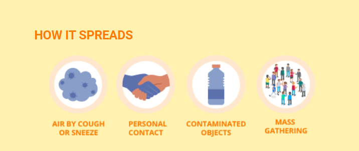
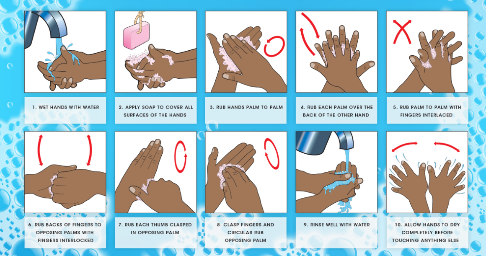

♛ LEARN HOW IT SPREADS FIRST!

According to the Centers for Disease Control and Prevention, COVID-19 is spread mainly from person-to-person, usually via close contact
(within six feet). That could be via physical contact, like handshaking (if someone's hands are contaminated with the virus) or touching
contaminated surfaces."A sneezing or coughing person will cover their mouth, get it all over their hand, and then touch something that you
then touch," Robert Murphy, MD, an infectious disease expert at Northwestern University, tells Health. The virus can then gain entry into
your body when you touch your own face, he adds.Simply being near an infected person who coughs, sneezes, or talks can expose you to their
infected respiratory droplets, the CDC says. It those virus-containing particles land in your eyes, nose, or mouth, or if it they get on
your hands and your rub any of those places on your face, you could possibly acquire the infection. And some people may be capable of spreading
it to others even though they don't have any symptoms, the CDC points out.
♛ Wash your hands in a proper way:

Hand washing is a healthy practice, and it is necessary to follow the proper steps to clean your hands of germs and dirt efficiently.
Alcohol-based sanitizers can be used as substitutes for soap and water, but the latter is the preferred choice.Washing your hands
often helps clear out any germs that may be present on your hands.Hand washing is one of the primary hygiene practices that people
learn from an early age. It plays a major role in preventing infections and illnesses such as colds, flu, and food poisoning.
Don't Forget To Close The Tap!